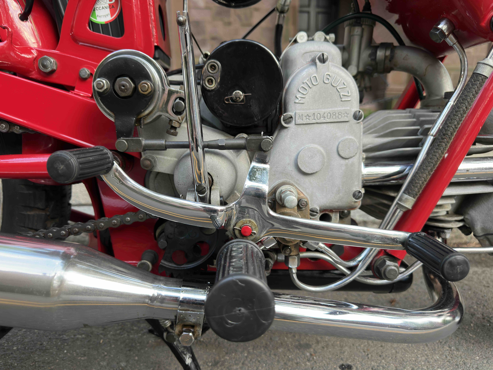
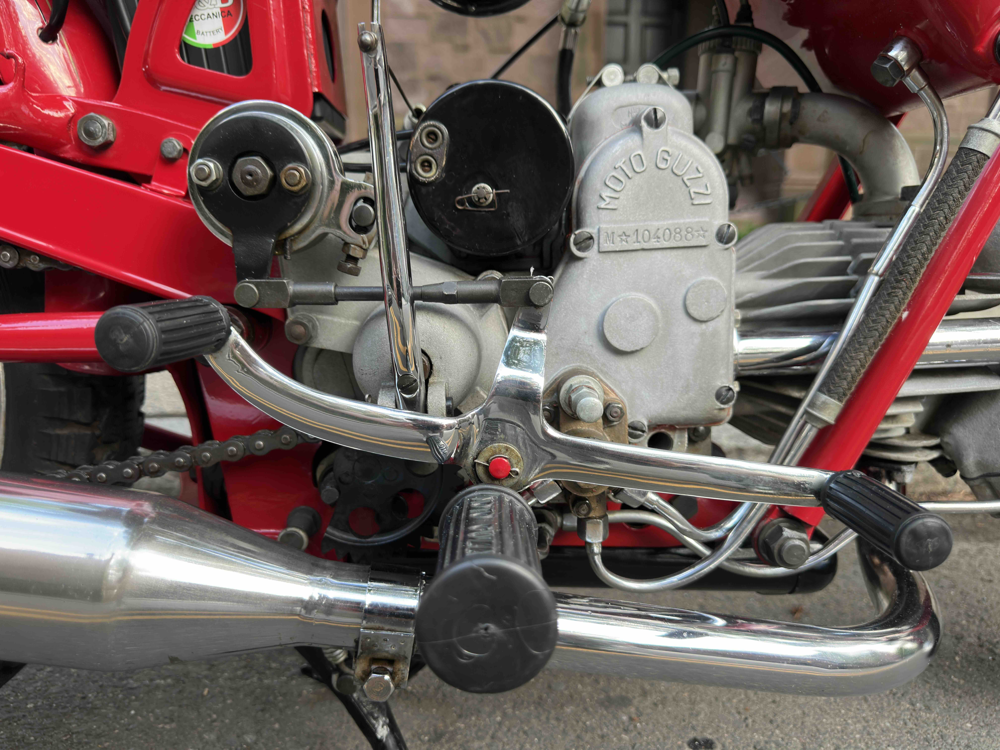

1 / 3
1978 Fiat 127 Fissore Sport
A very rare utility vehicle built over the everyday Fiat 127. Fits in just as well on Mediterranean islands as on vineyards and cobblestone streets.
- Features the 1050cc engine.
- Tons of 127 Sport trim.
- Just 21k original kilometers.
- Imported by ECS from Palermo, Sicily in 2025.


 
